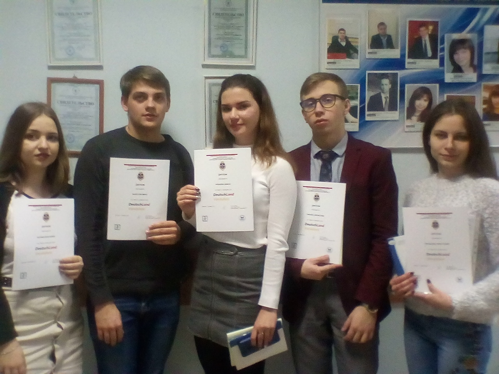
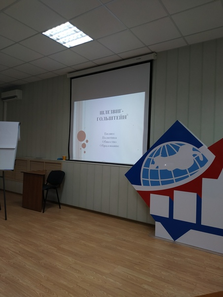

|
14 февраля сотрудники Центра германских политических исследований Софья Дмитриева и Ярослав Маклаков приняли участие в заседании правительственной Рабочей группы по взаимодействию Воронежской области с регионами Германии. Обсуждались возможности развития двустороннего диалога по ключевым направлениям экономической повестки, вопросы сотрудничества в образовательной сфере.
По итогам встречи был подписан Договор о сотрудничестве ВГУ с Воронежским региональным ресурсным центром.
25 декабря на заседании Учёного совета факультета международных отношений состоялось торжественное вручение дипломов призёрам конкурса эссе "DeutschLand verstehen"/ Понимаем Германию, проведённого Центром германских политических исследований ФМО совместно с кафедрами английского языка в профессиональной международной деятельности и немецкого языка факультета РГФ.
Поздравляем победителей!
Так держать!

12 декабря сотрудники Центра германских политических исследований Софья Дмитриева, Александр Белоусов и Ярослав Маклаков приняли участие в заседании рабочей группы по взаимодействию с ФРГ в Воронежском региональном ресурсном центре. На повестку дня были вынесены вопросы развития сотрудничества Воронежской области с регионами Германии. Сотрудники ЦГПИ выступили с докладами об актуальных экономических тенденциях и политических процессах федеральных земель Шлезвиг-Гольштейн и Бавария. По итогам докладов состоялся обмен мнениями.

Международники и регионоведы! Коллеги! Друзья! Конкурс эссе официально объявляется завершённым!
Комиссиям досталась непростая задача: выбрать из 30 очень хороших эссе-участников несколько лучших. В ходе обсуждений учитывались сразу много факторов: содержательная часть, структурированность, владение методами политического анализа, следование логике и жанру, языковая компетентность, наличие авторского видения, настойчивость в достижении цели.
Теперь итоги подведены, и мы их публикуем.
Лейбин Антон
Шихатов Никита
В номинации «Эссе на английском языке» призёрами стали:
1 место - Шихатов Никита;
2 место – Юров Максим, Курбатов Александр, Измалкова Маргарита;
3 место – Таранец Вячеслав, Кольцова Анастасия.
В номинации «Эссе на немецком языке» дипломы получают:
1 место - Лейбин Антон;
2 место – Кубаева Диана, Журавская Юлия;
3 место - Болотов Иван.
Поздравляем наших участников и призёров!
Ребят, вы – лучшие! Ура!!!
Огромное спасибо декану факультета международных отношений Беленову Олегу Николаевичу за всестороннюю поддержку нашего начинания, в том числе (и это важно!) финансовую.
Тёплое спасибо:
кафедре английского языка в профессиональной международной деятельности и лично заведующей Ларисе Григорьевне Кузьминой, преподавателям Анне Александровне Махониной, Наталье Васильевне Ильичёвой, Ирине Николаевне Акамсиной;
кафедре немецкого языка и лично доценту Елене Сергеевне Чаленко;
Центру германских политических исследований в лице заместителя декана доцента Вероники Николаевны Морозовой, доцента Софьи Игоревны Дмитриевой, магистранта Александра Алексеевича Белоусова.
Отдельное спасибо всем участникам. Благодаря вам конкурс есть, и его содержательная планка задана высоко.
Торжественное вручение дипломов состоится на заседании Учёного совета ФМО 26 декабря в 15.00. Сертификаты можно забрать на кафедре международных отношений и мировой политики у Дмитриевой С.И.
И ещё пара слов. В этот раз конкурс насчитывал на 30% больше участников, чем в прошлом году. К нам впервые присоединились регионоведы. Очевидно, это говорит о востребованности проблематики, да и политический класс Германии перманентно подбрасывает новые темы. Мы остаёмся в курсе, так что до встречи в следующем году!
Сотрудниками Центра подготовлен девятый выпуск сборника научных статей
«Германия на перекрестках истории. Проблемы внутренней и внешней политики в контексте трансформаций международных отношений».
Сборник посвящен вопросам исторического развития и актуальным социально-политическим процессам Германии и предназначен для специалистов-историков, политологов, международников, всех интересующихся историей и современным развитием ФРГ.
Центр германских политических исследований факультета международных отношений совместно с кафедрой английского языка в профессиональной международной деятельности и кафедрой немецкого языка факультета романо-германской филологии ВГУ
объявляют конкурс эссе DeutschLand Verstehen.
Тематика конкурса представлена следующими направлениями:
1. Партийная система в Германии после выборов 2017 года (на примере любой партии или сравнительный анализ нескольких партий);
2. Четыре канцлерских срока Ангелы Меркель: промежуточные итоги;
3. Цветная мозаика немецкого федерализма (на примере любой федеральной земли или система в целом);
4. Внешнеполитические вызовы и варианты для Большой коалиции – 2019;
5. Миграция. Немецкий контекст;
6. «Русские немцы» как часть общегерманского миграционного сообщества.
Эссе подразумевает изложение собственных мыслей автора в свободном стиле на выбранную тему. Главное условие проекта: эссе выполняются на немецком / английском языке. Объем работы - 2-3 страницы. Шрифт Times New Roman, 12 кегль, полуторный интервал.
Последний срок подачи работ – 15 ноября.
После изучения экспертной комиссией всех поданных на конкурс работ будут выделены лучшие эссе. Победители получат дипломы и призы. Эссе-победитель будет размещено на портале ФМО.
Состав экспертной комиссии:
Дмитриева С.И., к.и.н., доцент кафедры международных отношений и мировой политики ФМО ВГУ, директор Центра германских политических исследований;
Морозова В.Н., к.и.н., доцент кафедры международных отношений и мировой политики, заместитель декана ФМО ВГУ;
Белоусов А.А., победитель конкурса эссе DeutschLand verstehen 2017 года, бакалавр международных отношений, магистрант 2 курса ФМО ВГУ;
Кузьмина Л.Г., к.ф.н., доцент, зав. кафедрой английского языка в профессиональной международной деятельности факультета РГФ ВГУ;
Чаленко Е.С., к.ф.н., доцент кафедры немецкого языка факультета РГФ ВГУ;
Участвуйте, это отличный шанс пополнить свои знания о Германии и попробовать силы в качестве журналиста-международника!
Знания – ценность, а опыт бесценен!
Представители Центра германских политических исследований в Москве
Cотрудники Центра германских политических исследований факультета международных отношений Софья Дмитриева и Елена Бадалова приняли участие в мероприятиях, организованных Институтом всеобщей истории Российской академии наук.
Подробнее...
На ФМО появилась именная стипендия
Учёный совет факультета международных отношений принял решение о создании стипендиального фонда для выплаты именной стипендии. Стипендия имени известного учёного, историка-германиста, заведующего кафедрой международных отношений и регионоведения до 2005 года профессора Виктора Александровича Артёмова будет выплачиваться студентам старших курсов бакалавриата и магистратуры, проявившим повышенный интерес к научному исследованию социально-политических процессов и внешней политики Германии, способствовавшим популяризации данной проблематики и добившимся впечатляющих результатов в этой области.
Первым получателем стипендии имени В.А. Артёмова становится сотрудник Центра германских политических исследований магистрант Александр Белоусов, автор ряда научных публикаций, посвящённых партийно-политической системе современной ФРГ, соредактор сетевого ресурса "Понимаем Германию".
Поздравляем нашего коллегу с этим замечательным достижением и желаем ему вдохновения для новых интересных исследований!
Центр германских политических исследований анонсирует формирование девятого выпуска сборника научных материалов
«ГЕРМАНИЯ НА ПЕРЕКРЕСТКАХ ИСТОРИИ. Проблемы внутренней и внешней политики в контексте трансформаций международных отношений».
Читать информационное письмо
С 18 по 24 февраля студентка ФМО Полина Твеленёва и сотрудник Центра германских политических исследований Михаил Полянский проходили обучение в Зимней академии в Берлине
Поздравляем с профессиональным успехом и публикуем отзыв М. Полянского об этом событии.
Подробнее...
Доцент С. Дмитриева для Российского Совета по Международным Делам
Публикуем комментарий эксперта РСМД Софьи Дмитриевой о проблемах формирования правительственной коалиции в Германии.
Подробнее...
Сотрудниками Центра подготовлен восьмой выпуск сборника научных статей
«Германия на перекрестках истории. Проблемы внутренней и внешней политики в контексте трансформаций международных отношений».
Сборник посвящен вопросам исторического развития и актуальным социально-политическим процессам Германии и предназначен для специалистов-историков, политологов, международников, всех интересующихся историей и современным развитием ФРГ.
Подведены итоги конкурса эссе "DeutschLand Verstehen".
Центр германских политических исследований факультета международных отношений публикует результаты конкурса.
Подробнее...
Объявлено начало конкурса эссе "DeutschLand Verstehen".
Центр германских политических исследований факультета международных отношений совместно с кафедрой немецкого языка факультета романо-германской филологии
Воронежского государственного университета и Московским государственным институтом международных отношений (Университет) МИД России объявляют конкурс эссе "DeutschLand Verstehen".
Подробнее...
15 июня Воронежский государственный университет посетил доктор Петер Хиллер, возглавляющий Московское представительство Германской службы академических обменов.
В конференц-зале была организована встреча П.Хиллера с руководством университета и представителями факультетов.
Подробнее...
Информационное письмо Центра германских политических исследований
Читать онлайн
В последнем выпуске научного журнала Обозреватель (Observer) опубликована научная статья сотрудника Центра студента выпускного курса направления «Международные отношения» ФМО Михаила Полянского (в соавторстве с Р. Райнхардтом) «Федеративная республика Германия и перспективы «сделки века» (ТТИП)».
Подробнее...
Первая межрегиональная межвузовская видеоконференция, посвящённая взаимоотношениям России и группы стран GSA.
Подробнее...
20-25 февраля при содействии Центра германских политических исследований студенты-международники приняли участие в Зимней Академии в Берлине, посвященной теме поиска новой структуры отношений ЕС и России. Публикуем отзыв Софьи Архиповой об этом проекте. Поздравляем наших участников и Центр с успешным мероприятием!
Подробнее...
Представители кафедры международных отношений и мировой политики ФМО приняли участие в юбилейном Конвенте РАМИ «25 лет внешней политике России»
Подробнее...
Сотрудниками Центра подготовлен седьмой выпуск сборника научных статей
«Германия на перекрестках истории. Проблемы внутренней и внешней политики в контексте трансформаций международных отношений» Сборник посвящен вопросам исторического развития и актуальным социально-политическим процессам Германии и предназначен для специалистов-историков, политологов, международников, всех интересующихся историей и современным развитием ФРГ.
18–19 февраля сотрудники Центра германских политических исследований провели рабочие встречи с профессорами Института истории Философского факультета I доктором Хартмутом Петером и доктором Патриком Вагнером в рамках визита делегации Университета имени Мартина Лютера (Галле-Виттенберг, Галле, Германия). Поводом для визита стало празднование 50-летия сотрудничества ВГУ и МЛУ.
В рамках визита студенты факультета международных отношений прослушали лекцию профессора Вагнера «Земельные отношения и органы управления на Востоке Германии в XIX веке» и приняли активное участие в семинаре профессора Петера «Образ России и русских в Германии в XVI-XIX веках».
В ходе рабочих встреч были выявлены перспективные направления дальнейшего сотрудничества факультетов обоих университетов.
Сотрудниками Центра германских политических исследований подготовлен шестой выпуск научного сборника «Германия на перекрестках истории. Проблемы внутренней и внешней политики в контексте трансформаций международных отношений», посвященный 25-летию объединения Германии.
Сотрудниками Центра германских политических исследований подготовлен пятый выпуск научного сборника «Германия на перекрестках истории. Проблемы внутренней и внешней политики в контексте трансформаций международных отношений».
Сборник представляет собой материалы научной конференции, посвященной 40-летнему юбилею вступления ФРГ и ГДР в Организацию Объединенных Наций (Воронеж, 2013г.)
12-14 сентября 2013 года сотрудники Центра германских политических исследований Е.В.Бадалова и С.И. Дмитриева приняли участие в международной конференции "Германо-российские отношения и карьера", организованной Германской службой академических обменов на базе Кубанского государственного университета. В конференции участвовали выпускники стипендиальных программ ДААД из ФРГ и более чем 20 регионов России. В ходе встречи состоялись выступления экспертов в сфере германо-российских отношений, многочисленные дискуссии, работа в группах и презентации индивидуальных проектов. Отдельно стоит отметить посещение немецкого завода по производству сельскохозяйственной техники "CLAAS" в Краснодаре и встречу с генеральным директором предприятия г-ном Ральфом Бендишем.
Центром германских политических исследований подготовлен четвертый выпуск научного сборника «Германия на перекрестках истории».
Сборник содержит статьи историков-германистов, международников, научных сотрудников ведущих научных и образовательных учреждений различных регионов России.
Центром германских политических исследований опубликован третий выпуск научного сборника «Германия на перекрестках истории».
Данный выпуск посвящен 10-летию факультета международных отношений ВГУ и светлой памяти основателя школы германских исследований в ВГУ профессора Виктора Александровича Артемова, большого ученого и прекрасного человека, стоявшего у истоков нашего факультета.
В сборнике представлены научные статьи историков-германистов, международников, научных сотрудников ведущих научных и образовательных учреждений России и зарубежных стран.
|